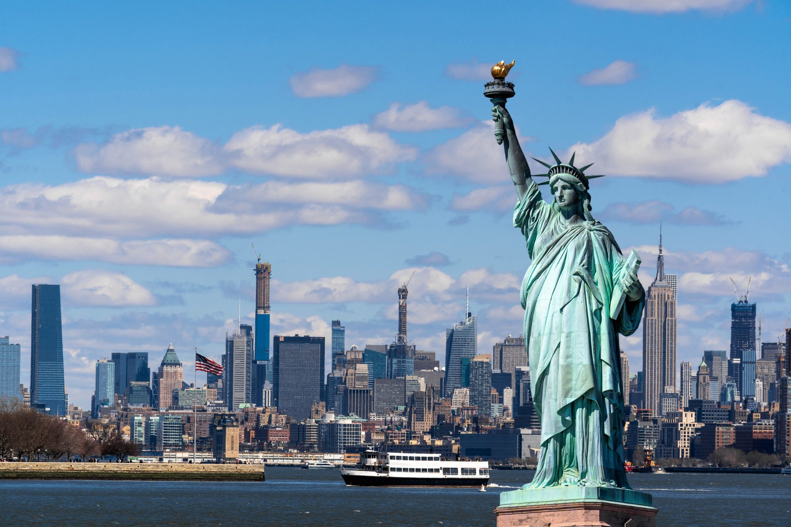

Stany Zjednoczone
Statystyki
| Powierzchnia |
9 833 520 km² |
| Liczba ludności |
332 403 650 |
| Gęstość zaludnienia |
34 os./km² |
| PKB całkowite |
26 854,60 mld USD |
Stany Zjednoczone Ameryki, Stany Zjednoczone, potocznie Ameryka (ang. United States of America, USA; United States, US; pot. America), do 11 lipca 1778 r. Stany Zjednoczone Ameryki Północnej – państwo federacyjne w Ameryce Północnej
Prezydenci
- George Washington
- John Adams
- Thomas Jefferson
- James Madison
- James Monroe
- John Quincy Adams
- Andrew Jackson
- Martin Van Buren
- William Henry Harrison
- John Tyler
- James Knox Polk
- Zachary Taylor
- Millard Fillmore
- Franklin Pierce
- James Buchanan
- Abraham Lincoln
- Andrew Johnson
- Ulysses S. Grant
- Rutherford B. Hayes
- James A. Garfield
- Chester A. Arthur
- Grover Cleveland
- Benjamin Harrison
- Grover Cleveland
- William McKinley
- Theodore Roosevelt
- William Howard Taft
- Woodrow Wilson
- Warren G. Harding
- Calvin Coolidge
- Herbert Hoover
- Franklin D. Roosevelt
- Harry S. Truman
- Dwight D. Eisenhower
- John F. Kennedy
- Lyndon B. Johnson
- Richard Nixon
- Gerald Ford
- Jimmy Carter
- Ronald Reagan
- George H. W. Bush
- Bill Clinton
- George W. Bush
- Barack Obama
- Donald Trump
- Joe Biden
Zdjęcia
